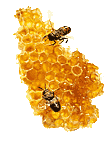

Мёд является натуральным продуктом жизнедеятельности медоносных пчёл рода Apis и Meliponinae. Со времен глубокой древности врачи считали мёд чудодейственным средством, помогающим при многих недугах. С его помощью лечили ожоги, раны, кожные заболевания, инфекции глаз, простуду, заболевания дыхательной и пищеварительной системы и даже заболевания, передающиеся половым путем.
Мёд - натуральный продукт жизнедеятельности медоносных пчёл рода Apis и Meliponinae. Со времен глубокой древности врачи считали мёд чудодейственным средством, помогающим при многих недугах. С его помощью лечили ожоги, раны, кожные заболевания, инфекции глаз, простуду, заболевания дыхательной и пищеварительной системы и даже заболевания, передающиеся половым путем.
Мёд является эффективным антибактериальным агентом благодаря нескольким особенностям его состава. Определенный уровень pH, содержание перекиси водорода, осмотический эффект и до сих пор не полностью изученные факторы, описываемые как ингибины, объясняют антибактериальную активность мёда.
В настоящее время достаточно часто публикуются результаты исследований, в которых в качестве лечебного средства использовался мёд. Пчелиный мёд нашел применение в лечении инфекций мягких тканей, послеоперационных раневых хирургических инфекций, ожогов, а также инфекций, вызванных Helicobacter pylori.
Spenser E. Efem из университета в Калабаре (Нигерия) опубликовал серию статей об антибактериальных и заживляющих свойствах мёда. В одной из его публикаций описывается 59 пациентов с незаживающими язвами, 80% из которых не отвечали на обычную терапию в течение от одного до двух месяцев. В качестве лечебного воздействия у данных пациентов использовался мёд. После промывания раны физиологическим раствором он ежедневно обрабатывал рану 15-30 мл обычного мёда. У 58 пациентов процесс заживления ран существенно ускорился, отделился струп, уменьшился отёк, ускорилась реэпителизация. Один из пациентов не ответил на терапию мёдом, что было связано с установленной позже грибковой природой раневого процесса.
Другой исследователь, Armon PJ из Танзании, описывает применение танзанийского мёда для лечения хирургических ран, в частности пролежня 20 см в диаметре, располагавшегося в области крестца с глубинной поражения до кости. Исследователь использовал тонкие аппликации из очищенного мёда трижды в день, затем накладывал сухой перевязочный материал. Armon PJ указывает, что уже на девятый день проводимой терапии стало возможным применение хирургической пластики.
Al Somal и его коллеги описывают эксперименты in vitro, которые подтверждают способность пчелиного мёда ингибировать рост H.pylori. Они установил, что 5% раствор мёда полностью ингибирует рост H.pylori, а 2,5% раствор мёда ингибирует рост H.pylori частично.
Индийский исследователь Subrahmanyam описывает серию клинических случаев, в которых он использовал мёд как альтернативную терапию для лечения ожогов. В его исследовании сравнивались пчелиный мёд и сульфадиазин серебра. В исследование было включено 104 пациента с поверхностными ожогами <40% поверхности тела. Пациенты были разделены на две группы: в первой группе в качестве терапии использовался мёд, а во второй сульфадиазин серебра. У 45 из 52 пациентов в первой группе на 15 день отмечалось заживление ожогов, а во второй группе заживление наступило только у 5 пациентов.
Представленные клинические случаи служат доказательством антибактериальных и заживляющих свойств мёда. К сожалению, статистический анализ к проведенным исследованиям применить пока нельзя в связи с тем, что большинство из них не отвечает современным стандартам клинических испытаний.
Nicholas Namias
Honey in the Management of Infection
Surgical Infections 2003; 4(2):219-26